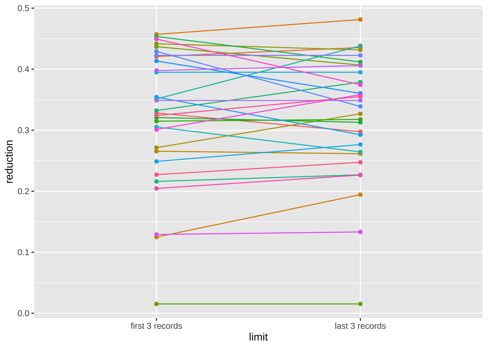
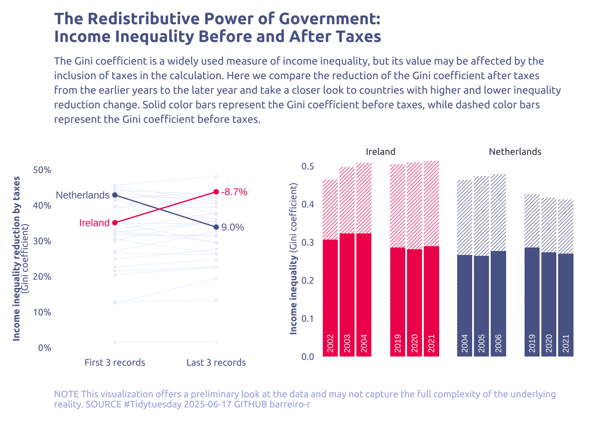

library(tidyverse)
library(glue)
library(scales)
library(showtext)
library(ggtext)
library(shadowtext)
library(maps)
library(ggpattern)
library(ggrepel)
library(patchwork)
library(tidylog)
font_add_google("Ubuntu", "Ubuntu", regular.wt = 400, bold.wt = 700)
showtext_auto()
showtext_opts(dpi = 300)
Tip
About the Data
Note
This week we’re exploring Income Inequality Before and After Taxes, as processed and visualized by Joe Hasell at Our World in Data: “Income inequality before and after taxes: how much do countries redistribute income?”
The Gini coefficient measures inequality on a scale from 0 to 1. Higher values indicate higher inequality. Inequality is measured here in terms of income before and after taxes and benefits.
1 Initializing
1.1 Load libraries
1.2 Set theme
cool_gray0 <- "#323955"
cool_gray1 <- "#5a6695"
cool_gray2 <- "#7e89bb"
cool_gray3 <- "#a4aee2"
cool_gray4 <- "#cbd5ff"
cool_gray5 <- "#e7efff"
cool_red0 <- "#A31C44"
cool_red1 <- "#F01B5B"
cool_red2 <- "#F43E75"
cool_red3 <- "#E891AB"
cool_red4 <- "#FAC3D3"
cool_red5 <- "#FCE0E8"
theme_set(
theme_minimal() +
theme(
# axis.line.x.bottom = element_line(color = 'cool_gray0', linewidth = .3),
# axis.ticks.x= element_line(color = 'cool_gray0', linewidth = .3),
# axis.line.y.left = element_line(color = 'cool_gray0', linewidth = .3),
# axis.ticks.y= element_line(color = 'cool_gray0', linewidth = .3),
# # panel.grid = element_line(linewidth = .3, color = 'grey90'),
panel.grid.major = element_blank(),
panel.grid.minor = element_blank(),
axis.ticks.length = unit(-0.15, "cm"),
plot.background = element_blank(),
# plot.title.position = "plot",
plot.title = element_text(family = "Ubuntu", size = 14, face = 'bold'),
plot.caption = element_text(
size = 8,
color = cool_gray3,
margin = margin(20, 0, 0, 0),
hjust = 0
),
plot.subtitle = element_text(
size = 9,
lineheight = 1.15,
margin = margin(5, 0, 15, 0)
),
axis.title.x = element_markdown(
family = "Ubuntu",
hjust = .5,
size = 8,
color = cool_gray1
),
axis.title.y = element_markdown(
family = "Ubuntu",
hjust = .5,
size = 8,
color = cool_gray1
),
axis.text = element_text(
family = "Ubuntu",
hjust = .5,
size = 8,
color = cool_gray1
),
legend.position = "top",
text = element_text(family = "Ubuntu", color = cool_gray1),
# plot.margin = margin(25, 25, 25, 25)
)
)1.3 Load this week’s data
income_inequality_processed <- readr::read_csv('https://raw.githubusercontent.com/rfordatascience/tidytuesday/main/data/2025/2025-08-05/income_inequality_processed.csv')2 Data analysis
How many countries?
income_inequality_processed |>
count(Entity, sort = TRUE)# A tibble: 52 × 2
Entity n
<chr> <int>
1 United States 61
2 United Kingdom 54
3 Canada 45
4 Germany 40
5 Brazil 38
6 Luxembourg 37
7 France 30
8 Spain 30
9 Austria 27
10 Sweden 27
# ℹ 42 more rowsHow many years?
income_inequality_processed |>
count(Year, sort = TRUE)# A tibble: 61 × 2
Year n
<dbl> <int>
1 2010 41
2 2016 41
3 2013 40
4 2007 37
5 2015 37
6 2014 36
7 2017 36
8 2018 35
9 2004 34
10 2011 34
# ℹ 51 more rowsBoth:
income_inequality_processed |>
mutate(Entity = fct_infreq(Entity)) |>
ggplot(aes(x = Year, y = Entity)) +
geom_tile(aes(fill = gini_mi_eq + gini_dhi_eq), show.legend = FALSE) 
Many NAs.
Lets add some filters
income_inequality_processed |>
filter(!is.na(gini_dhi_eq) & !is.na(gini_mi_eq)) |>
group_by(Entity) |>
filter(n() > 10) |>
ungroup() |>
mutate(Entity = fct_infreq(Entity)) |>
ggplot(aes(x = Year, y = Entity)) +
geom_tile(aes(fill = gini_mi_eq - gini_dhi_eq)) -1.png)
How it change over time?
min_year <-
income_inequality_processed |>
filter(!is.na(gini_dhi_eq) & !is.na(gini_mi_eq)) |>
filter(n() > 10) |>
group_by(Entity) |>
slice_min(Year, n = 3) |>
summarise(
pre_tax = mean(gini_mi_eq), sd_pre_tax = sd(gini_mi_eq),
pos_tax = mean(gini_dhi_eq), sd_pos_tax = sd(gini_dhi_eq)) |>
ungroup() |>
mutate(limit = 'lower')
max_year <-
income_inequality_processed |>
filter(!is.na(gini_dhi_eq) & !is.na(gini_mi_eq)) |>
filter(n() > 10) |>
group_by(Entity) |>
slice_max(Year, n = 3) |>
summarise(
pre_tax = mean(gini_mi_eq), sd_pre_tax = sd(gini_mi_eq),
pos_tax = mean(gini_dhi_eq), sd_pos_tax = sd(gini_dhi_eq)) |>
ungroup() |>
mutate(limit = 'upper')
bind_rows(min_year, max_year) |>
mutate(reduction = 1 - pos_tax / pre_tax ) |>
ggplot(aes(x = limit, y = reduction)) +
geom_point(aes(color = Entity), show.legend = FALSE) +
geom_line(aes(color = Entity, group = Entity), show.legend = FALSE)
3 Transform Data for Plotting
min_year <-
income_inequality_processed |>
filter(!is.na(gini_dhi_eq) & !is.na(gini_mi_eq)) |>
filter(Year > 2000) |>
filter(n() > 10) |>
group_by(Entity) |>
slice_min(Year, n = 3) |>
summarise(
pre_tax = mean(gini_mi_eq), sd_pre_tax = sd(gini_mi_eq),
pos_tax = mean(gini_dhi_eq), sd_pos_tax = sd(gini_dhi_eq),
year = min(Year)) |>
ungroup() |>
mutate(limit = 'first 3 records')
max_year <-
income_inequality_processed |>
filter(!is.na(gini_dhi_eq) & !is.na(gini_mi_eq)) |>
filter(Year > 2000) |>
filter(n() > 10) |>
group_by(Entity) |>
slice_max(Year, n = 3) |>
summarise(
pre_tax = mean(gini_mi_eq), sd_pre_tax = sd(gini_mi_eq),
pos_tax = mean(gini_dhi_eq), sd_pos_tax = sd(gini_dhi_eq),
year = max(Year)) |>
ungroup() |>
mutate(limit = 'last 3 records')
data2plot <-
bind_rows(min_year, max_year) |>
mutate(reduction = 1 - pos_tax / pre_tax ) |>
janitor::clean_names()
# -- Raw
data2plot2 <-
income_inequality_processed |>
filter(!is.na(gini_dhi_eq) & !is.na(gini_mi_eq)) |>
filter(Year > 2000) |>
filter(n() > 10) |>
janitor::clean_names() |>
rename(gini_pre_tax = gini_mi_eq, gini_pos_tax = gini_dhi_eq)4 Time to plot!
4.1 Before
data2plot |>
mutate(reduction = 1 - pos_tax / pre_tax ) |>
ggplot(aes(x = limit, y = reduction)) +
geom_point(aes(color = entity), show.legend = FALSE) +
geom_line(aes(color = entity, group = entity), show.legend = FALSE) +
theme_grey()
4.2 Final
reduction_change <-
data2plot |>
select(entity, reduction, limit) |>
pivot_wider(names_from = limit, values_from = reduction) |>
janitor::clean_names() |>
mutate(reduction_change = first_3_records - last_3_records)
more_reduction_country <- reduction_change |>
slice_max(reduction_change, n = 1) |>
pull(entity)
less_reduction_country <- reduction_change |>
slice_min(reduction_change, n = 1) |>
pull(entity)
more_reduction_data <- data2plot |> filter(entity %in% more_reduction_country)
less_reduction_data <- data2plot |> filter(entity %in% less_reduction_country)
p1 <-
data2plot |>
filter(
!entity %in% c(more_reduction_data$entity, less_reduction_data$entity)
) |>
mutate(reduction = 1 - pos_tax / pre_tax) |>
ggplot(aes(x = limit, y = reduction)) +
geom_point(show.legend = FALSE, color = cool_gray5, size = 0.5) +
geom_line(
aes(group = entity),
linewidth = .2,
color = cool_gray5,
show.legend = FALSE
) +
# add more
geom_point(
data = more_reduction_data,
show.legend = FALSE,
color = cool_gray1
) +
geom_line(
data = more_reduction_data,
aes(group = entity),
color = cool_gray1,
show.legend = FALSE
) +
# add less
geom_point(
data = less_reduction_data,
show.legend = FALSE,
color = cool_red1,
) +
geom_line(
data = less_reduction_data,
aes(group = entity),
color = cool_red1,
show.legend = FALSE
) +
# add name
geom_text(
data = more_reduction_data |> filter(limit == 'first 3 records'),
aes(label = entity),
hjust = 1,
nudge_x = -0.05,
size = 3,
color = cool_gray1
) +
geom_text(
data = less_reduction_data |> filter(limit == 'first 3 records'),
aes(label = entity),
hjust = 1,
nudge_x = -0.05,
size = 3,
color = cool_red1
) +
# add change
geom_text(
data = more_reduction_data |>
left_join(reduction_change, by = 'entity') |>
filter(limit == 'last 3 records'),
aes(label = percent(reduction_change, accuracy = 0.1)),
hjust = 0,
nudge_x = 0.05,
size = 3,
color = cool_gray1
) +
geom_text(
data = less_reduction_data |>
left_join(reduction_change, by = 'entity') |>
filter(limit == 'last 3 records'),
aes(label = percent(reduction_change, accuracy = 0.1)),
hjust = 0,
nudge_x = 0.05,
size = 3,
color = cool_red1
) +
# Labels
labs(
x = NULL,
y = "**Income inequality reduction by taxes**<br>(Gini coefficient)",
title = "The Redistributive Power of Government:\nIncome Inequality Before and After Taxes",
subtitle = str_wrap("The Gini coefficient is a widely used measure of income inequality, but its value may be affected by the inclusion of taxes in the calculation. Here we compare the reduction of the Gini coefficient after taxes from the earlier years to the later year and take a closer look to countries with higher and lower inequality reduction change. Solid color bars represent the Gini coefficient before taxes, while dashed color bars represent the Gini coefficient before taxes.", width = 110),
caption = str_wrap(
"NOTE This visualization offers a preliminary look at the data and may not capture the full complexity of the underlying reality. SOURCE #Tidytuesday 2025-06-17 GITHUB barreiro-r",
width = 120,
)
) +
scale_y_continuous(
label = percent,
limits = c(0, .5)
) +
scale_x_discrete(
label = c(
`first 3 records` = 'First 3 records',
`last 3 records` = 'Last 3 records'
)
)
# --- Bar plot
data2plot2_more_reduction <-
bind_rows(
data2plot2 |>
filter(entity %in% c(more_reduction_data$entity)) |>
slice_max(year, n = 3) |>
mutate(limit = 'first 3 records'),
data2plot2 |>
filter(entity %in% c(more_reduction_data$entity)) |>
slice_min(year, n = 3) |>
mutate(limit = 'last 3 records')
)
data2plot2_less_reduction <-
bind_rows(
data2plot2 |>
filter(entity %in% c(less_reduction_data$entity)) |>
slice_max(year, n = 3) |>
mutate(limit = 'first 3 records'),
data2plot2 |>
filter(entity %in% c(less_reduction_data$entity)) |>
slice_min(year, n = 3) |>
mutate(limit = 'last 3 records')
)
data2plot3 <-
bind_rows(data2plot2_less_reduction, data2plot2_more_reduction) |>
arrange(entity, year) |>
group_by(entity) |>
mutate(bar_position = row_number()) |>
# create a gap
mutate(
bar_position = if_else(bar_position > 3, bar_position + 1, bar_position)
) |>
ungroup() |>
pivot_longer(
cols = c(gini_pre_tax, gini_pos_tax),
names_to = 'tax',
values_to = 'gini'
) |>
mutate(
entity = factor(
entity,
levels = c(less_reduction_country, more_reduction_country)
)
) |>
mutate(limit = factor(limit, levels = c('first 3 records', 'last 3 records')))
p2 <-
data2plot3 |>
ggplot(aes(x = bar_position, y = gini)) +
geom_col_pattern(
data = subset(data2plot3, tax == 'gini_pre_tax'),
pattern = "stripe",
aes(pattern_fill = entity),
color = NA,
pattern_color = NA,
fill = 'white',
pattern_spacing = .02,
pattern_angle = 45,
show.legend = FALSE
) +
geom_col(
data = subset(data2plot3, tax == 'gini_pos_tax'),
aes(fill = entity),
show.legend = FALSE
) +
geom_text(
data = subset(data2plot3, tax == 'gini_pos_tax'),
aes(label = year),
angle = 90,
y = 0.01,
hjust = 0,
color = "white",
size = 2.5
) +
facet_wrap(vars(entity)) +
labs(
x = NULL,
y = "**Income inequality** (Gini coefficient)",
) +
scale_y_continuous(
expand = c(0,0,0,0)
) +
scale_fill_manual(values = c(cool_red1, cool_gray1)) +
scale_pattern_fill_manual(values = c(cool_red1, cool_gray1)) +
theme(
axis.text.x = element_blank(),
strip.text = element_text(family = "Ubuntu", size = 8, color = cool_gray0),
)
# --- Combine
p1 + p2 + plot_layout(widths = c(1.7, 2))